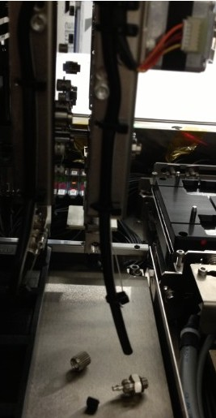
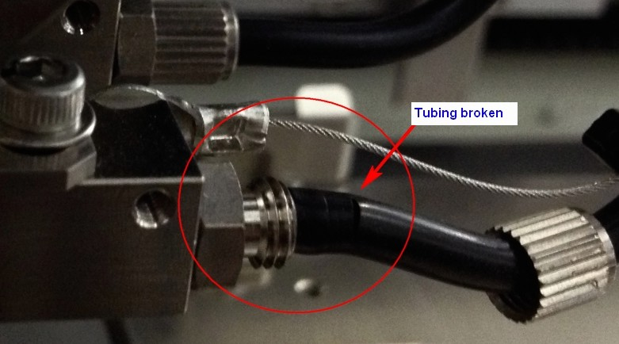
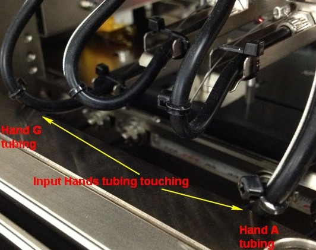
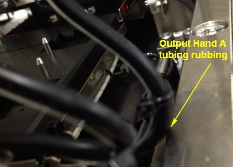

Service History
Subject: Input & Output Hand B & H tubing broken
Handler Model: NX1032XS (S/N: 182347)
Controller: RC520 (S/N: 00504), DUBOX030 (S/N: 100004), PSUNT353 (P892)
Date: 16 Nov & 5 Dec 2012
Symptom
Input Hand H rubber tubing broken caused device pickup error.
Device pickup error on Input Hand H occurred at loader. When open the round metal air fitting, the black rubber tubing broke off.
Cut away broken tubing and fit tubing back to the Input Hand H and run with devices, no error.
Not sure if other pickup Hands that uses the same type of rubber tubing will have same problem or not.
This is a new handler and not running production yet.

5 Dec 2012 tubings broken and causing device pickup error on:
- Input Hand B
- Output Hand B
- Output Hand H

Tubing for Input Hands touch some areas of handlers during pickup devices on Input Shuttle2 & Output Shuttle2. This touch/rubbing can cause air tubing to be broken.
For FF900 31x31, only Hand A,B,G & H of Input & Output Hands are used.


Action
Warranty raise S0535.
Tubing for Input & Output Hand B & H were replaced with silicon type.
Silicon tube (for Hand actuator, 1 pc (4m)) R35N700003800.
Cause
Tubing broken caused device pickup error for Input & Output Hand B & H.
Remarks
Input & Output Hand B & H belongs to Open/close X & Y pitch.
B & H are at the Variable Y & X Hands, which may stress the tubing during opening and closing of Hands.